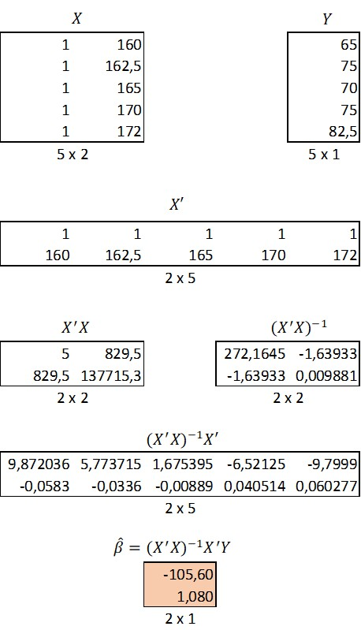

Let's continue with the same data set of artificial weights and heights.
| name | weight | height |
|---|---|---|
| Anna | 65.0 | 160.0 |
| Donald | 75.0 | 162.5 |
| Tom | 70.0 | 165.0 |
| Dick | 75.0 | 170.0 |
| Harry | 82.5 | 172.0 |
To begin with the matrix form derivation, we have to define the relevant matrices for the process. Y is a column vector of values that we are trying to predict.
\[Y=\begin{bmatrix} y_1\\ y_2\\ ...\\ ...\\ y_n\\ \end{bmatrix}_{n\times 1}=\begin{bmatrix} 65\\ 75\\ 70\\ 75\\ 82.5\\ \end{bmatrix}_{5\times 1} \]
The dimensions of the Y vector are \(n\times 1\), which is five rows (\(=n\)) by one column in this case.
The next matrix is the design matrix X, i.e. the matrix of predictor variables. The columns of the matrix correspond to the independent variables and the rows to observations. If the model includes an intercept, the design matrix has to include a dummy column of ones. Thus the dimensions for the X matrix are \(n\times k\), in which k is the number of predictors including the intercept.
\[X=\begin{bmatrix} 1 & x_1\\ 1 & x_2\\ 1 & x_3\\ 1 & x_4\\ 1 & x_5\\ \end{bmatrix}_{5\times 2}=\begin{bmatrix} 1 & 160\\ 1 & 162.5\\ 1 & 165\\ 1 & 170\\ 1 & 172\\ \end{bmatrix}_{5\times 2} \]
Next we need an unknown vector of coefficients. The coefficient vector is column vector with dimensions \(k\times 1\). Again k corresponds to the number of predictors including the intercept.
\[\hat{\beta}= \begin{bmatrix} \hat{\beta}_0\\ \hat{\beta}_1\\ \end{bmatrix}_{2\times 1} \]
Note that the individual scalar coefficients are denoted with a subscript, while the vector is denoted simply as \(\hat{\beta}\).
The last component that we need for our model are the residuals (deviations from the predicted values) that our model will make, which is a \(n\times 1\) vector of residuals.
\[e=\begin{bmatrix} e_1\\ e_2\\ e_3\\ e_4\\ e_5\\ \end{bmatrix}_{5\times 1} \]
And there we have everything. The regression model is:
\[Y=X\hat{\beta}+e\]
The above is just short-hand notation for:
\[\begin{bmatrix} y_1\\ y_2\\ y_3\\ y_4\\ y_5\\ \end{bmatrix}_{5\times 1} = \begin{bmatrix} 1 & x_1\\ 1 & x_2\\ 1 & x_3\\ 1 & x_4\\ 1 & x_5\\ \end{bmatrix}_{5\times 2} \times \begin{bmatrix} \hat{\beta}_0\\ \hat{\beta}_1\\ \end{bmatrix}_{2\times 1} + \begin{bmatrix} e_1\\ e_2\\ e_3\\ e_4\\ e_5\\ \end{bmatrix}_{5\times 1} \]
Note that the beta vector is on left side of the design matrix. This is not a mistake as
we want the matrix product of X and beta.
A matrix product of an \(n\times k\) matrix with
\(k\times 1\) vector is possible,
where as the other way around would not be possible.
If this is new, I suggest you to study basic rules of matrix calculus,
but to simplify if you want the matrix product of two matrices,
the number of columns in the first matrix has to be equal to the number of rows in the second matrix.
On the other hand the dimensions of the resulting matrix will have the number of rows from
the first matrix and the number of columns from the second.
Let's see what happens if we multiply X with beta. We know the resulting matrix, has to have dimensions of
\(n\times 1\ = 5 \times 1\)
\[ \begin{bmatrix} y_1\\ y_2\\ y_3\\ y_4\\ y_5\\ \end{bmatrix}_{5\times 1} = \begin{bmatrix} 1 & x_1\\ 1 & x_2\\ 1 & x_3\\ 1 & x_4\\ 1 & x_5\\ \end{bmatrix}_{5\times 2} \times \begin{bmatrix} \hat{\beta}_0\\ \hat{\beta}_1\\ \end{bmatrix}_{2\times 1} + \begin{bmatrix} e_1\\ e_2\\ e_3\\ e_4\\ e_5\\ \end{bmatrix}_{5\times 1} \]
\[ \begin{bmatrix} y_1\\ y_2\\ y_3\\ y_4\\ y_5\\ \end{bmatrix}_{5\times 1} = \begin{bmatrix} 1 * \hat{\beta}_0 + x_1 * \hat{\beta}_1\\ 1 * \hat{\beta}_0 + x_1 * \hat{\beta}_1\\ 1 * \hat{\beta}_0 + x_1 * \hat{\beta}_1\\ 1 * \hat{\beta}_0 + x_1 * \hat{\beta}_1\\ 1 * \hat{\beta}_0 + x_1 * \hat{\beta}_1\\ \end{bmatrix}_{5\times 1} + \begin{bmatrix} e_1\\ e_2\\ e_3\\ e_4\\ e_5\\ \end{bmatrix}_{5\times 1} \]
\[ \begin{bmatrix} y_1\\ y_2\\ y_3\\ y_4\\ y_5\\ \end{bmatrix}_{5\times 1} = \begin{bmatrix} \hat{\beta}_0 + \hat{\beta}_1x_1 + e_1\\ \hat{\beta}_0 + \hat{\beta}_1x_1 + e_2\\ \hat{\beta}_0 + \hat{\beta}_1x_1 + e_3\\ \hat{\beta}_0 + \hat{\beta}_1x_1 + e_4\\ \hat{\beta}_0 + \hat{\beta}_1x_1 + e_5\\ \end{bmatrix}_{5\times 1} \]
From the last step you can see that each value of y is equal to the sum of intercept, slope times x and the residual. This is exactly the same as detoning \(y_i=\hat{\beta}_0+\hat{\beta}_1x_i+e_i\).
.We want to derive a vector of unknown coefficients \(\hat{\beta}\) for the following linear model: \[Y=X\hat{\beta}+e\] Remember that the objective is exactly the same as last time: we want to minimize the sum of squared residuals \(min(\Sigma_i^n e^2_i\)). This time the derivation is just done with matrix algebra and we want to minimize the matrix product of the residual vector \(e\). The sum of squared residuals is easy to find with vectors by taking the matrix product of the transpose of residual vector with the original residual vector. \[ e' \times e \] The above is short-hand of saying: \[ \begin{bmatrix} e_1 & e_2 & e_3 & e_4 & e_5\\ \end{bmatrix}_{1\times 5} \times \begin{bmatrix} e_1\\ e_2\\ e_3\\ e_4\\ e_5\\ \end{bmatrix}_{5\times 1} \] Again just to illustrate the connection to the scalar derivation, we can see what the above matrix product would yield us: \[ \begin{bmatrix} e_1 * e_1 + e_2 * e_2 + e_3 * e_3 + e_4 * e_4 + e_5 * e_5 \\ \end{bmatrix}_{1\times 1} \] Note that the result is a \(1 \times 1\)) vector and thus a scalar and equal to the minimization problem of the previous post: \[ e^2_1 + e^2_2 + e^2_3 + e^2_4 + e^2_5 = \Sigma^{n=5}_i e_i \] Consequently we can minimize: \[ e' \times e \] and as we note that \[ e = Y - X \hat{\beta} \] We can denote: \[ e' \times e = (Y - X \hat{\beta})' (Y - X \hat{\beta}) \] Using the properties of transponations: \[ e' \times e = (Y' - \hat{\beta}'X') (Y - X \hat{\beta}) \] \[ = Y'Y - Y' X \hat{\beta} - \hat{\beta}'X' Y + \hat{\beta}'X' X \hat{\beta} \] Take heed that \[ {Y'}_{1 \times n} X_{n \times k} \hat{\beta}_{k \times 1} = Scalar = {\hat{\beta}'}_{1 \times k} {X'}_{k \times n} Y_{n \times 1} \] The transpose of a scalar is the scalar itself: \[ = Y'Y - \hat{\beta}'X' Y - \hat{\beta}'X' Y + \hat{\beta}'X' X \hat{\beta} \] \[ = Y'Y - 2\hat{\beta}'X' Y + \hat{\beta}'X' X \hat{\beta} \] Remember from previous post that we are trying to solve the minimum of an upward opening parabola and thus we have to differentiate with the respect to vector beta and find the point where the derivative is zero: \[ \frac{\delta e'e}{\delta \hat{\beta}}= - 2X' Y + 2X' X \hat{\beta} \] The above uses the following properties of matrix differentation: \[ \frac{\delta h'd}{\delta h}=d=\frac{\delta hd'}{\delta h}\] when h and d are k x 1 vectors. X'Y is a k x 1 vector. \[ \frac{\delta h'Ah}{\delta h}=2Ah \] when A is a symmetric matrix, which is the case with X'X. \[ 2X' Y = 2X' X \hat{\beta} \\ X' X \hat{\beta} = X' Y\\ \] Let's take a look on the LHS: \({X'}_{k \times n}\) and \({X}_{n \times k}\)). The matrix product of such matrix is a square k x k matrix and symmetric. Next we'll assume that the X'X matrix is invertible. To simplify, inversion for matrices is the closest thing to a division - an operation not available matrices. The matrix would not be invertible, for example, in a situtation where two of your predictor variables are perfectly correlated, i.e. in a case of perfect multicollinearity. Next we pre-multiply both sides of the equation with the inversion of the matrix \( ({X'}_{k \times n} {X}_{n \times k})^{-1} \). \[ (X'X)^{-1} X' X \hat{\beta} = (X'X)^{-1} X' Y\\ \] Now we'll need to remember that multiplying a matrix by its inverse results an identity matrix by definition. \( (X'X)^{-1} X'X = I_n \). The identity matrix is the following: \[ I_n=\begin{bmatrix} 1 & 0 & 0 & ... & 0 \\ 0 & 1 & 0 & ... & 0 \\ 0 & 0 & 1 & ... & 0 \\ \vdots & \vdots & \vdots & \ddots & \vdots \\ 0 & 0 & 0 & ... & 1 \\ \end{bmatrix} \]. Multiplying a matrix with an identity matrix results in the matrix itself: \[ I_n \hat{\beta} = (X'X)^{-1} X' Y\\ \hat{\beta} = (X'X)^{-1} X' Y\\ \] And there you have it. This is the third aspect of the very same derivation. Let's try it out with out data. The final results appear in the beta vector. The first element of the beta vector is the intercept and the second the slope.  That's all. Before proceeding to bayesian regression, we'll cover Maximum Likelihood aspect of OLS regression. This is the topic of the next post.